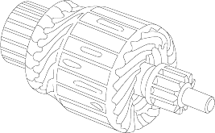
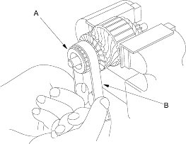
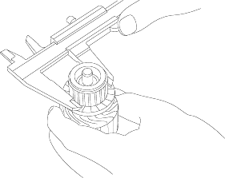

Armature Inspection and Test
- Remove the starter (see page 4-8).
- Disassemble the starter as shown at the beginning of this procedure.
- Inspect the armature for wear or damage from contact with the permanent magnet. If there is wear or damage, replace the armature.

- Check the commutator (A) surface. If the surface is dirty or burnt, resurface with emery cloth or a lathe within the following specifications, or recondition with #500 or #600 sandpaper (B) (Except D16V1 (KG, KR, KS models) engine with M/T).

- Check the commutator diameter. If the diameter is below the service limit, replace the armature (Except D16V1 (KG, KR, KS models) engine with M/T).
Commutator Diameter
Standard (New):27.9-28.0 mm (1.098-1.102 in.)
Service Limit:27.0 mm (1.063 in.)
